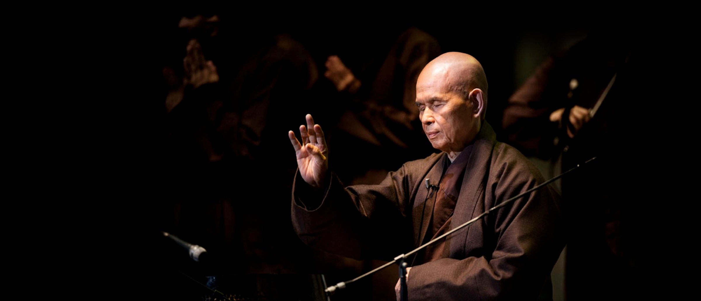

Zen-Meister, Dichter und Friedensaktivist. Gründer der Plum-Village-Tradition und im Jahr 2008 Gründer des Europäischen Instituts für Angewandten Buddhismus.
„Once there is seeing, there must be acting."
Thích Nhất Hạnh wurde 1926 in Zentralvietnam geboren und trat bereits mit sechzehn Jahren in ein Zen-Kloster ein. Aus dieser frühen Entscheidung erwuchs ein Lebensweg, der ihn zu einem der einflussreichsten buddhistischen Lehrer des 20. und 21. Jahrhunderts machen sollte — bekannt weit über die Grenzen Vietnams und des Buddhismus hinaus schlicht als „Thầy", Lehrer.
Während des Vietnamkriegs entwickelte Thầy, was heute als „Engagierter Buddhismus" bekannt ist: eine Haltung, die kontemplative Praxis nicht dem gesellschaftlichen Handeln entgegensetzt, sondern beides miteinander verbindet. Statt sich in Klostermauern zurückzuziehen oder sich ausschließlich politisch zu engagieren, gründete er Hilfsorganisationen, Schulen und Verlage, die Nothilfe und spirituelle Praxis miteinander verbanden.
Sein unermüdlicher Einsatz für Frieden blieb nicht unbemerkt: 1967 nominierte ihn Martin Luther King Jr. für den Friedensnobelpreis.
Für sein öffentliches Eintreten für Frieden wurde Thầy aus Vietnam verbannt. Es folgten 39 Jahre im Exil — Jahre, in denen er nicht resignierte, sondern eine neue geistige Heimat aufbaute, die Menschen aus aller Welt erreichen sollte.
1982 gründete Thầy in Frankreich das Kloster Plum Village, das mit der Zeit zum größten buddhistischen Kloster im Westen heranwuchs. Seine Lehre machte Achtsamkeit alltagstauglich: bewusstes Gehen, Essen und Atmen wurden zu Übungswegen, die keine Vorkenntnisse erforderten. Die von ihm formulierten Fünf Achtsamkeitsübungen wurden von mehr als 100.000 Menschen weltweit als Übungsgrundlage angenommen.
Achtsamkeit ist keine Flucht aus der Gesellschaft, sondern die Rückkehr zu uns selbst, um zu sehen, was geschieht.
Sinngemäß nach Thích Nhất Hạnh2008 gründete Thầy in Waldbröl das Europäische Institut für Angewandten Buddhismus — eine nicht gewinnorientierte Einrichtung, die seine Lehre für Menschen aus ganz Europa zugänglich machen sollte. Bis heute lebt und übt hier eine Gemeinschaft von Mönchen und Nonnen in seiner Tradition weiter.
Die ausführliche Geschichte der Gründung, des historischen Gebäudes und seiner Bedeutung finden Sie auf der Seite Das Haus und seine Geschichte.
In den folgenden Jahrzehnten gründete Thầy weitere Klöster auf mehreren Kontinenten, rief die Jugendbewegung „Wake Up" ins Leben und brachte Achtsamkeitsprogramme in Schulen. Sein zugänglicher, undogmatischer Lehrstil machte die Praxis der Achtsamkeit für Menschen ganz unterschiedlicher Herkunft und Überzeugung erfahrbar.
Thích Nhất Hạnh starb am 22. Januar 2022 im Từ-Hiếu-Tempel in Huế, Vietnam — dem Kloster, in dem er einst als junger Mönch ordiniert worden war. Er hinterließ eine weltweite Gemeinschaft von rund 700 monastischen Schülerinnen und Schülern in elf Klöstern sowie unzählige Laienpraktizierende, die seine Lehre heute weitertragen.
Geboren in Zentralvietnam
Eintritt ins Kloster als junger Mönch
Engagierter Buddhismus während des Vietnamkriegs
Nominierung für den Friedensnobelpreis durch Martin Luther King Jr.
Gründung von Plum Village in Frankreich
Gründung des EIAB in Waldbröl
Gestorben im Từ-Hiếu-Tempel, Huế
Fotos: Plum Village / Thai Plum Village